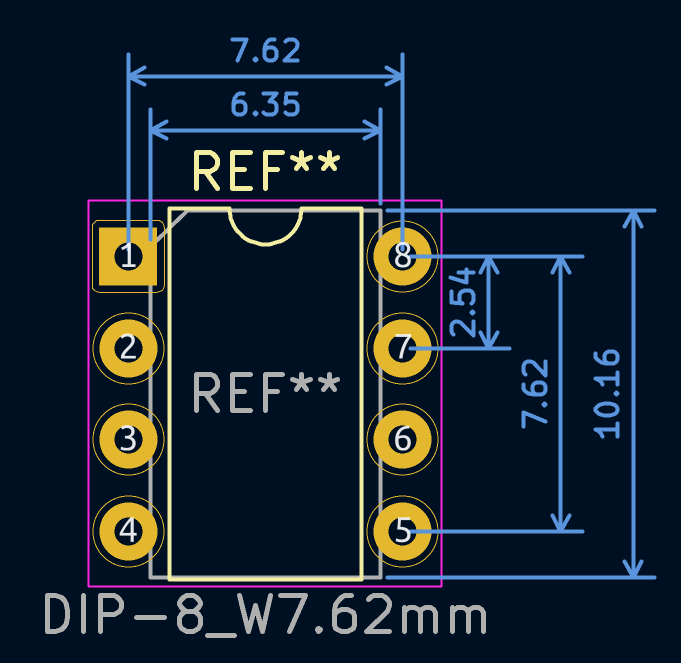

This project template is for quickly creating diagrams for Kicad symbols and footprints.
It is designed for "large" parts and has larger graphical arrows by default.
Example of a part diagram with the default dimensions provided by this template:
